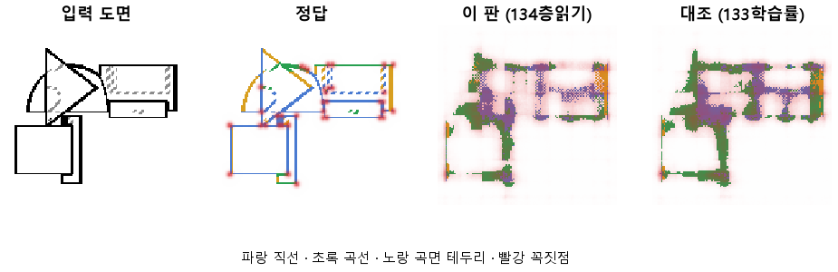

한 줄로
물음: CNN의 층마다 같은 읽기 머리를 붙이면, 선 정보가 어느 층에서 사라지는지 보일까?
답: 짐작은 반만 맞았다. 맨 뒤 블록 4가 선 자리를 잘 못 찾는다는 짐작은 맞았다. 하지만 가장 못 찾은 곳은 가운데 블록 2·3이었다. 맨 앞 블록 1도 목표에 못 미쳤다. 목표선 4개 중 1개만 넘어서 판정은 실패다.
왜 이 판을 했나
우리 모델은 부품 도면(위·앞·옆 세 장)을 본다. 그리고 화소마다 선이 있는지, 있으면 무슨 선인지 칠한다. 그림을 읽는 부분은 CNN, 즉 그림을 줄여 가며 특징을 뽑는 신경망이다. 그 끝에 붙은 읽기 머리가 특징을 받아 선과 꼭짓점을 칠한다.
133에서 학습률을 올렸지만 곡선을 곡선으로 맞힌 비율은 0.30이었다. 목표 0.90에 한참 모자란다. 학습이 덜 된 건지, CNN이 그림을 줄이면서 선을 잃는 건지 가를 수 없었다. 그래서 층마다 따로 읽어 보기로 했다. 미리 적어 둔 짐작은 이랬다. 덜 줄인 블록 1·2는 선 자리를 잘 찾고, 16배로 줄인 블록 4는 못 찾는다.
바꾼 것 하나
CNN의 블록 1~4 뒤에 똑같이 생긴 읽기 머리를 하나씩 붙였다. 학습 설정은 133과 같다. 10바퀴, 학습 부품 3,000개, 시험 부품 299개.
결과

| 이 판 (134) | 대조 (133) | 목표 | 넘었나 | |
|---|---|---|---|---|
| 블록 1, 선이 있는 자리를 찾음 | 0.82 | — | 0.90 이상 | ✗ |
| 블록 2, 선이 있는 자리를 찾음 | 0.53 | — | 0.85 이상 | ✗ |
| 블록 2, 곡선을 곡선으로 | 0.11 | — | 0.60 이상 | ✗ |
| 블록 4, 선이 있는 자리를 찾음 | 0.62 | 0.73 | 0.80 아래 | ✓ |
점수는 0~1이고 높을수록 좋다. 블록 4 줄만 목표가 거꾸로다. 「블록 4는 못 찾는다」는 짐작을 확인하는 줄이라서 0.80 아래여야 넘는다. 블록 1~3은 이번에 처음 읽어서 대조 값이 없다.
왜 이렇게 나왔나
확인한 것
- 선 자리 점수는 층을 지날수록 고르게 줄지 않았다. 블록 1부터 0.82, 0.53, 0.44, 0.62 순이다.
- 블록 1과 블록 4의 자리 차이는 0.20이다. 아래 한계에 적은 흔들림 0.11보다 크다.
- 선 종류 전체 점수는 블록 1이 0.50, 블록 4가 0.52로 거의 같다. 곡선만 보면 0.33 대 0.19다.
- 꼭짓점은 블록 2가 가장 잘 찍었다(F1 0.32, 블록 1은 0.20). F1은 점을 맞게 찍었는지와 빠짐없이 찍었는지를 함께 본 점수다.
- 학습은 덜 끝났다. 마지막 바퀴에도 시험 오차가 6.70에서 6.39로 줄고 있었다.
짐작 (아직 확인 안 함)
- 블록 4가 가운데 블록보다 나은 것은 원래 머리가 붙어 있던 자리라서일 수 있다. 학습 내내 선을 칠하도록 다듬어졌다는 뜻이다.
- 블록 4는 133보다 떨어졌다(자리 0.73 → 0.62, 곡선 0.30 → 0.19). 새로 붙인 머리들의 오차가 CNN까지 같이 끌어당겼기 때문으로 본다.
한계
- 시험 부품 299개로 한 번만 돌렸다. 같은 설정을 다시 돌렸을 때의 흔들림은 재지 않았다.
- 블록 4는 133과 같아야 하는데 자리가 0.73 대 0.62로 0.11 어긋났다. 원인을 아직 모른다. 그래서 0.1 안팎의 차이는 믿지 않는 게 좋다. 곡선의 0.33 대 0.19도 이 경계에 가깝다.
- 오차가 아직 줄던 10바퀴에서 끊었다. 더 배우면 층 순위가 바뀔 수 있다.
배운 것과 다음
선 정보는 깊은 층으로 갈수록 고르게 사라진다고 봤지만 아니었다. 선 자리는 맨 앞 블록이 가장 많이 들고 있었다. 지금 구조는 맨 뒤 층만 읽으니 이 자리 정보를 버리고 있을 수 있다. 선 종류와 꼭짓점은 어느 층이 나은지 아직 가를 수 없다.
- 맨 앞 블록과 맨 뒤 블록을 이어 붙여 읽게 한다.
- 새 머리의 오차가 CNN으로 흐르지 않게 막고 다시 돌린다. 그래서 블록 4가 왜 떨어졌는지 가린다.
- 오차가 더 줄지 않을 때까지 바퀴를 늘려 층 순위가 그대로인지 본다.